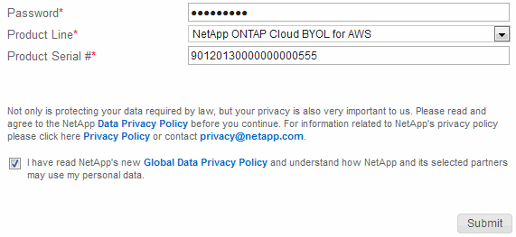

Solicitar cambios en el documento
Solicitar cambios en el documento Editar en GitHub
Editar en GitHub Guía del colaborador
Guía del colaboradorVaya a los documentos de la última versión.
Modificación de sistemas Cloud Volumes ONTAP
Colaboradores
Es posible que deba cambiar la configuración de las instancias de Cloud Volumes ONTAP a medida que cambien las necesidades de almacenamiento. Por ejemplo, puede cambiar entre configuraciones de pago por uso, cambiar la instancia o el tipo de equipo virtual y pasar a una suscripción alternativa.
Instalación de archivos de licencia en sistemas BYOL de Cloud Volumes ONTAP
Si Cloud Manager no puede obtener un archivo de licencia de BYOL de NetApp, puede obtener el archivo y cargarlo manualmente a Cloud Manager para que pueda instalar la licencia en el sistema Cloud Volumes ONTAP.
-
Vaya a la "Generador de archivos de licencia de NetApp" E inicie sesión con sus credenciales del sitio de soporte de NetApp.
-
Introduzca su contraseña, elija su producto, introduzca el número de serie, confirme que ha leído y aceptado la política de privacidad y, a continuación, haga clic en Enviar.
ejemplo

-
Elija si desea recibir el archivo serialnumber.NLF JSON a través del correo electrónico o la descarga directa.
-
En Cloud Manager, abra el entorno de trabajo BYOL de Cloud Volumes ONTAP.
-
Haga clic en el icono de menú y, a continuación, haga clic en Licencia.

-
Haga clic en cargar archivo de licencia.
-
Haga clic en cargar y seleccione el archivo.
Cloud Manager instala el nuevo archivo de licencia en el sistema Cloud Volumes ONTAP.
Cambiar la instancia o el tipo de máquina de Cloud Volumes ONTAP
Puede elegir entre varios tipos de máquina o instancia al ejecutar Cloud Volumes ONTAP en AWS, Azure o GCP. Puede cambiar la instancia o el tipo de máquina en cualquier momento si determina que tiene un tamaño insuficiente o demasiado grande para sus necesidades.
-
La devolución automática debe estar habilitada en una pareja de ha de Cloud Volumes ONTAP (esta es la configuración predeterminada). Si no lo es, la operación fallará.
-
La operación reinicia Cloud Volumes ONTAP.
Para los sistemas de un solo nodo, la I/o se interrumpe.
En el caso de los pares de alta disponibilidad, el cambio no es disruptivo. Los pares de ALTA DISPONIBILIDAD siguen sirviendo datos.
-
Al cambiar el tipo de instancia o máquina, se ven afectados los cargos por servicios del proveedor de cloud.
-
En el entorno de trabajo, haga clic en el icono de menú y, a continuación, haga clic en Cambiar licencia o instancia para AWS, Cambiar licencia o VM para Azure, o Cambiar licencia o máquina para GCP.
-
Si utiliza una configuración de pago por uso, puede elegir una licencia diferente.
-
Seleccione una instancia o un tipo de máquina, active la casilla de verificación para confirmar que comprende las implicaciones del cambio y, a continuación, haga clic en Aceptar.
Cloud Volumes ONTAP se reinicia con la nueva configuración.
Cambio entre configuraciones de pago por uso
Después de lanzar sistemas Cloud Volumes ONTAP de pago por uso, puede cambiar entre las configuraciones Explore, Estándar y Premium en cualquier momento modificando la licencia. Al cambiar la licencia, aumenta o disminuye el límite de capacidad bruta y le permite elegir entre diferentes tipos de instancia de AWS o tipos de máquina virtual de Azure.

|
En GCP, hay un solo tipo de máquina disponible para cada configuración de pago por uso. No se puede elegir entre distintos tipos de máquinas. |
Tenga en cuenta lo siguiente sobre el cambio entre las licencias de pago por uso:
-
La operación reinicia Cloud Volumes ONTAP.
Para los sistemas de un solo nodo, la I/o se interrumpe.
En el caso de los pares de alta disponibilidad, el cambio no es disruptivo. Los pares de ALTA DISPONIBILIDAD siguen sirviendo datos.
-
Al cambiar el tipo de instancia o máquina, se ven afectados los cargos por servicios del proveedor de cloud.
-
En el entorno de trabajo, haga clic en el icono de menú y, a continuación, haga clic en Cambiar licencia o instancia para AWS, Cambiar licencia o VM para Azure, o Cambiar licencia o máquina para GCP.
-
Seleccione un tipo de licencia y un tipo de instancia o de máquina, active la casilla de verificación para confirmar que comprende las implicaciones del cambio y, a continuación, haga clic en Aceptar.
Cloud Volumes ONTAP se reinicia con la nueva licencia, el tipo de instancia o el tipo de máquina, o ambos.
Mover a una configuración de Cloud Volumes ONTAP alternativa
Si desea pasar de una suscripción de pago por uso a una suscripción BYOL o entre un único sistema Cloud Volumes ONTAP y un par de alta disponibilidad, puede poner en marcha un nuevo sistema y replicar los datos, a continuación, del sistema existente al nuevo sistema.
-
Crear un nuevo entorno de trabajo de Cloud Volumes ONTAP.
-
"Configure la replicación de datos única" entre los sistemas para cada volumen que se debe replicar.
-
Finalice el sistema Cloud Volumes ONTAP que ya no utiliza ¿necesita "eliminación del entorno de trabajo original".
Cambiar su suscripción a AWS Marketplace
Cambie la suscripción a AWS Marketplace para su sistema Cloud Volumes ONTAP si desea cambiar la cuenta de AWS desde la que se cobra.
-
Si aún no lo ha hecho, añada una nueva suscripción de "La oferta de Cloud Manager en el mercado de AWS".
-
En el entorno de trabajo de Cloud Manager, haga clic en el icono de menú y, a continuación, haga clic en Suscripción de Marketplace.
-
Seleccione una suscripción de la lista desplegable.
-
Haga clic en Guardar.
Cambio de la velocidad de escritura a normal o alta
La velocidad de escritura predeterminada para las Cloud Volumes ONTAP es normal. Puede cambiar a una alta velocidad de escritura si es necesario un rendimiento de escritura rápido para su carga de trabajo. Antes de cambiar la velocidad de escritura, debe hacerlo "entender las diferencias entre los ajustes normal y alto".
-
Asegúrese de que no haya operaciones en curso como la creación de volúmenes o agregados.
-
Tenga en cuenta que este cambio reinicia Cloud Volumes ONTAP.
Para los sistemas de un solo nodo, la I/o se interrumpe.
En el caso de los pares de alta disponibilidad, el cambio no es disruptivo. Los pares de ALTA DISPONIBILIDAD siguen sirviendo datos.
-
En el entorno de trabajo, haga clic en el icono de menú y, a continuación, haga clic en Avanzado > velocidad de escritura.
-
Seleccione normal o Alta.
Si elige Alto, tendrá que leer la sentencia "entiendo…" y confirmar marcando la casilla.
-
Haga clic en Guardar, revise el mensaje de confirmación y, a continuación, haga clic en proseguir.
Modificación del nombre de la máquina virtual de almacenamiento
Cloud Manager nombra automáticamente a la máquina virtual de almacenamiento (SVM) para Cloud Volumes ONTAP. Puede modificar el nombre de la SVM si tiene estándares de nomenclatura estrictos. Por ejemplo, puede que desee que coincida con el nombre que le tienen las SVM de los clústeres de ONTAP.
-
En el entorno de trabajo, haga clic en el icono de menú y, a continuación, haga clic en Información.
-
Haga clic en el icono de edición a la derecha del nombre de la SVM.

-
En el cuadro de diálogo Modify SVM Name (Modificar nombre de SVM), modifique el nombre de SVM y, a continuación, haga clic en Save (Guardar).
Cambiando la contraseña de Cloud Volumes ONTAP
Cloud Volumes ONTAP incluye una cuenta de administrador de clúster. Si es necesario, puede cambiar la contraseña de esta cuenta desde Cloud Manager.

|
No debe cambiar la contraseña de la cuenta de administrador mediante System Manager o la CLI. La contraseña no se reflejará en Cloud Manager. Como resultado, Cloud Manager no puede supervisar la instancia correctamente. |
-
En el entorno de trabajo, haga clic en el icono de menú y, a continuación, haga clic en Avanzado > establecer contraseña.
-
Introduzca la nueva contraseña dos veces y, a continuación, haga clic en Guardar.
La nueva contraseña debe ser diferente de una de las últimas seis contraseñas que ha utilizado.
Cambiar la MTU de red para instancias c4.4xgrande y c4.8xgrande
De forma predeterminada, Cloud Volumes ONTAP se configura para utilizar 9,000 MTU (también denominado tramas gigantes) cuando se selecciona la instancia c4.4xgrande o la instancia c4.8xgrande en AWS. Puede cambiar el MTU de red a 1,500 bytes si es más adecuado para la configuración de red.
Una unidad de transmisión máxima (MTU) de red de 9,000 bytes puede proporcionar el mayor rendimiento de red posible para configuraciones específicas.
El valor de MTU de 9,000 es una buena opción si los clientes del mismo VPC se comunican con el sistema de Cloud Volumes ONTAP y algunos de esos clientes también admiten 9,000 MTU. Si el tráfico abandona el VPC, se puede producir la fragmentación del paquete, lo que degrada el rendimiento.
Una MTU de red de 1,500 bytes es una buena opción si los clientes o sistemas fuera del VPC se comunican con el sistema de Cloud Volumes ONTAP.
-
En el entorno de trabajo, haga clic en el icono de menú y, a continuación, haga clic en Avanzado > utilización de red.
-
Seleccione Estándar o tramas jumbo.
-
Haga clic en Cambiar.
Cambiar las tablas de rutas asociadas con pares de alta disponibilidad en varios AWS AZS
Puede modificar las tablas de rutas de AWS que incluyen las rutas a las direcciones IP flotantes de un par de alta disponibilidad. Puede hacerlo si los nuevos clientes NFS o CIFS necesitan acceder a un par de alta disponibilidad en AWS.
-
En el entorno de trabajo, haga clic en el icono de menú y, a continuación, haga clic en Información.
-
Haga clic en tablas de rutas.
-
Modifique la lista de tablas de rutas seleccionadas y, a continuación, haga clic en Guardar.
Cloud Manager envía una solicitud de AWS para modificar las tablas de rutas.